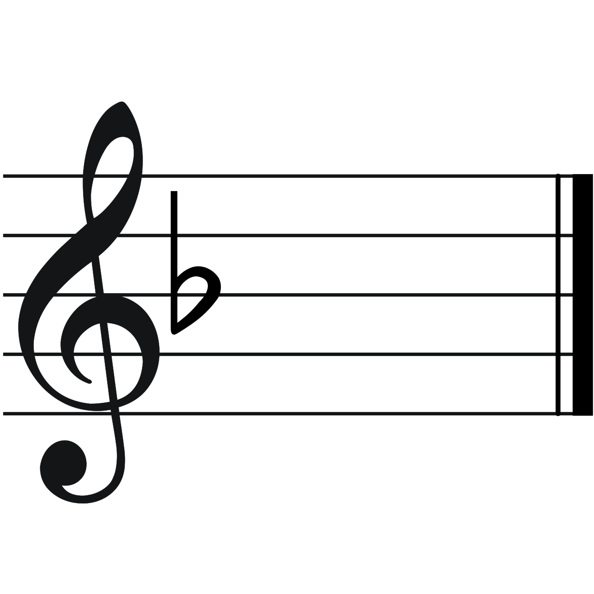

Brandenburg Concerto No. 2 in F major, I. Allegro
Johann Sebastian Bach (1685-1750)
Work Information
Composition
Key signature: F major (D minor)

Time signature: 2/2
Number of measures:
Instrumentation
- Trumpet (P1)
- Flute (P2)
- Oboe (P3)
- Violin (P4)
- Violino 1. di ripieno (P5)
- Violino 2. di ripieno (P6)
- Viola di ripieno (P7)
- Violone di ripieno (P8)
- Violoncello e Cembalo (P9)